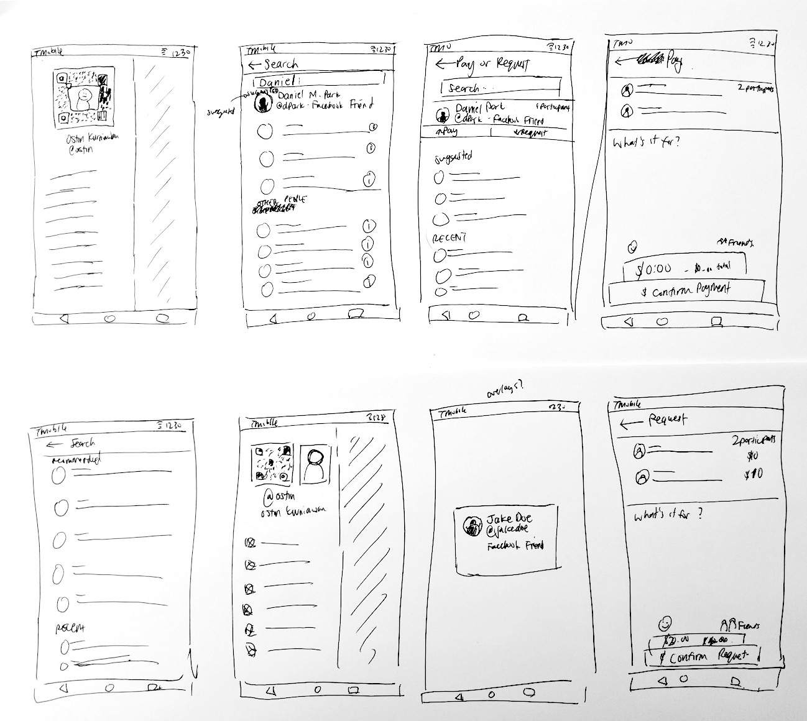

Introduction
As a side project to put my HCDE theory and interaction design skills to the test, I challenged myself to do a (unsolicited) redesign for a feature of an app I used regularly in a single weekend. I chose Venmo since it has largely become an essential tool in the average college students’ arsenal of smartphone apps, seeing regular use for all sorts of financial transactions — from splitting rent to meals alike. The feature I saw the most potential for a redesign was the integrated Search and Pay function. There are a couple reasons as to why.

As a side project to put my HCDE theory and interaction design skills to the test, I challenged myself to do a (unsolicited) redesign for a feature of an app I used regularly in a single weekend. I chose Venmo since it has largely become an essential tool in the average college students’ arsenal of smartphone apps, seeing regular use for all sorts of financial transactions — from splitting rent to meals alike. The feature I saw the most potential for a redesign was the integrated Search and Pay function. There are a couple of immediate reasons as to why.
Venmo effectively has two types of ‘Friends’ — Venmo Friends and Facebook Friends. This distinction is not immediately clear.
-
Facebook friends are not automatically added as Venmo Friends, even though the account is linked.
-
Facebook friends are not prioritised over other accounts that may match a Search query. A common issue I hear from other users is that users have to unnecessarily search through the search results because their Facebook friends are not at the top.
-
Users you have interacted with in the past are not prioritised either.
While the act of scanning Venmo Codes is immediately accessible and easy to use, finding the Venmo code to share is not very intuitive or quick.
-
Finding a Venmo code requires the user to dive into many menus.
Here's an example of this issue in practice:
My goal: Help users find people to pay or request quickly.
Competitive Analysis
I researched other “peer payment” apps like Cash App (previously Square Cash), Messenger Pay, Apple Pay Cash, and Google Wallet. I studied their search functions, especially in relation to the process of group payments. I also studied the search functions of other social apps like Snapchat, Facebook, and Instagram to identify best practices in ensuring that what is searched for is most relevant to the user. In doing so, I came up with a number of key insights:
-
In Instagram and Snapchat, the service provides a number of ‘Suggested’ users to interact with, presumably based on most recently or most interacted with. It then breaks down search into ‘Recent’ or ‘Top’, which sort by immediate friends or people you’ve interacted with based on those criterion. People you have never interacted with are at the bottom of the list, and out of sight unless you specifically scroll down far enough.
-
Snapchat and Messenger provide one-click or one-swipe access to their respective visual user ‘Codes’ (Snapcodes and Messenger Codes), making it easy for users to share their codes without having to dig through a multiple layers of menus.
-
Snapchat provides quick access to users you’ve recently interacted with when sending Snaps, which makes sending people regular payments easy and visual, rather than scrolling through a list.
-
When requesting money from multiple people, Google Wallet presents the users you are requesting/paying money to in a list, which makes it easier to check whether you’ve charged the correct amount of people.
-
Snapchat provides quick access to users you’ve recently interacted with when sending Snaps, which makes sending people regular payments easy and visual, rather than scrolling through a list.
User Research
I conducted informal user observations to identify the pain points during this process. I asked four of my friends (three college students, one high schooler) to request a sample payment from a group of five of my other friends, while I watched them use the application. I asked them to think aloud, and especially voice any concerns when the application became confusing. In doing so, I found and/or confirmed a number of issues:
Facebook friends not prioritised
All participants had difficulty finding the target recipient. All were Facebook friends with the recipient, but the target recipient was never the first result, rather it was usually the fourth or fifth result, preceded by other people they did not know. They only identified the target recipient by the profile picture.
Pay when they mean to request, and vice versa
At the end of the transaction sequence, three of the four participants hovered over 'request' button before they pressed the 'pay' button, i.e. they almost paid the transaction targets when they meant to request money from them.
Difficulty finding the Venmo QR code
When asked to find the Venmo QR code, three of the four participants replied "there's a Venmo code?". These three were then asked to look for the code and show it to me. All three opened the hamburger menu and tapped their profile picture (they missed the small QR icon), then tapped the small QR icon beside their profile picture. When asked why they tapped on the second one rather than the first instance of the QR code, answers included "because it was still there, there was no other option" and "I didn't know the button was so small".
Sketching
With the user research and my insights in mind, I started to sketch out requirements and ideas for enhancing the search function in Venmo. These rough sketches gave me insight into the moving components, the touch targets, and informational architecture of the the application.
Prototyping
Since I would be iterating on the existing Venmo interface rather than completely redesigning it, I decided that jumping straight into high-fidelity prototyping would save me time. Framer allows for quick and live iterations, and so I could test these live, especially with the Framer Preview app, which allows me to send the prototypes to a phone for live testing.
I started the redesign process by copying screenshots of the Venmo Android app. My goal is to redesign the Search interaction and not the entire app, and so copying the original Android app gave me insight into both Venmo’s design language and the Material Design specification used. Once three basic screens were copied (Venmo home screen, Pay/Request opening screen, and Pay/Request search results), I iterated on these until solutions were achieved.
I focused on solving only one user flow: requesting/paying people that are not your Venmo friends.
There are three types of screens in the Payment/Request sequence (referenced as “P/R sequence” hereafter):
-
The “Add” screen, which is the default state when no search query is inputted. Here, “Top People” can be added quickly to the list of P/R receipients.
-
The “Search” screen, which shows the search result for a given query.
-
The “Finishing” screen, which is shown after all recipients have been added. This screen has input fields for the “payment memo” and the payment details.
The changes I made and the rationales behind them will be explained screen-by-screen.
Recent Users

Problem: Users do not have access to a list of people they have recently interacted with.
Solution: Split the users listed in the “Add” Screen into “Recommended” and “Recent” instead of just “Top People”.
The current Venmo app groups the people you interact with most all into one group called “Top People”. It’s a vague term and does not appear to show people you have interacted with recently if they are not specifically a Venmo friend. This means, unintuitively, that you have to add them as a Venmo friend, even if you are Facebook friends or even if you interact with them daily. This is fixed by grouping “Suggested” users into one group — the clearer language suggests that these users are people you interact with regularly, and grouping “Recent” users into another group, so users can have quick contextual access to charging people they have charged recently — this is helpful in situations like when a group of friends are going out and splitting the bill at multiple places.
Facebook Friend Search Result Prioritisation

Problem: Search results are only prioritised by Venmo friends and Venmo mutual friends. If Facebook friends are not a user’s Venmo friend too, they have the same low priority as random people.
Solution: Group search results by “Suggested” and “Other People on Venmo”. “Other People on Venmo” will have a secondary hierarchy, showing people you have the most mutual friends in descending order. If you have recently had an interaction with a user, a “Recent” tag will also show up.
The current Venmo app does not appear to prioritise search results on any criteria other than Venmo friends and Venmo mutual friends. Since many users will also link their Facebook accounts under the assumption that their Facebook friends lists will be used to link accounts, users are confused as to why the Facebook friends are not prioritised in the search results above any random person matching the search query. To fix this, Facebook friends would be given the same priority as Venmo friends, and a tag indicating what type of friend (Venmo or Facebook) would be implemented so users know that the person they are interacting with is someone they actually know. Users who are neither Venmo friends or Facebook friends would fall under “Other users”, which makes it clear whether a user actually has a connection with a search result.
Venmo Code

Problem: Finding your own Venmo code requires too many steps.
Solution: Put the Venmo code directly in the main hamburger menu.
Currently, Venmo codes are found in two ways: by clicking the hamburger menu icon from the home page then tapping the very small “code” icon at the bottom right corner of the user’s profile page, or by opening the hamburger menu, tapping the “Scan Code” menu item, and then swiping to the left to get to the “My Code” screen. To increase efficiency, the Venmo code could be directly integrated into the user profile image (like Snapchat, Spotify, and Facebook Messenger), users only need to swipe right on the home screen to be able to quickly show and share their Venmo code in a real-life setting.
Multi-recipient payments/requests

Problem: When creating a payment or request to multiple people, it is difficult to check whether or not the right people are in the payment/request.
Solution: Replace the comma-separated chain of users in a payment/request with a vertical list including their profile pictures.
In the current app, when creating a payment/request to many people, the users are listed in a comma-separated format that makes it difficult to check whether it is the right person (perhaps that Mark is the wrong Mark?) and the right amount of people. By ordering the users in a vertical list as well, the user making the payment/request can double check that it’s the right user through the username and the profile picture, and can double check that they are requesting the right number of people, since a vertical list is easier to count then a string of comma-separated names with potentially confusing last names.
Accidental payments/requests
Problem: It is too easy to pay when you mean to request and vice versa.
Solution: Introduce the type of interaction earlier and add icons enhance glanceability.
Instead of “Pay” and “Request” being the last step of the P/R sequence, this choice is moved much earlier in the process. The buttons also have icons to make the action clearer — out for payments, in for requests. Users now select either to “Pay” or “Request” money when adding people during search, then are led to the “Finishing” screen where their chosen transaction type is displayed at the top of the page. The last step of the P/R sequence is instead a confirmation, giving users time to ensure that the transaction type is correct.
Transaction details

Problem: Transaction details in the “Finishing” screen are hardly visible
Solution: List the transaction recipients vertically, with profile pictures, and move the transaction amount to the bottom of the screen, near the “Confirm” button. Add a “total number of participants” detail.
Like the Search query, the current app fits all the information into one bar, which is both difficult to read and difficult to confirm details. This information is again split up, with the transaction recipients listed vertically for easy review and the payment details located much larger next to the confirmation button. The confirmation button ensures that the type of transaction is correct, instead of being very accident-prone in the current app.
Prototype Animations
Framer allows me to prototype high-fidelity animtions, which I’ve been able to play around with more. Here are some of the interactions I implemented for this redesign. An interactive prototype can be accessed here.

the beginning of a transaction with one recipient
accessing the QR code through the hamburger menu


finalising a payment with multiple recipients
User Testing, round 2
I conducted a second round of user testing with my original testing participants, and received feedback. While most of the feedback was positive, there are a couple of things they found unintuitive:
Adding a user to the recipient list is jarring
One participant found that the lack of animation when adding a person to the list of participants was jarring and unituitive. This could be resolved by adding a quick animation showing a user "card" sliding right of the search results then sliding into the recipient list from the left, or moving straight up from the search results to the recipient list.
Transaction amount selection too close to confirmation button
While the transaction amount was clearer and accidental false payments were mitigated, two users felt that the payment "tab" was too close to the "confirm payment" button, leading to a higher likeliness of sending a payment/request with a wrong amount.
Reflection
Over this process, I have learned a ton about the micro-interactions that make interactions more intuitive, less painful, and more efficient. This project has allowed me to also become much more familiar with the Material Design spec, making me more confident that I can use it effectively and efficiently. In addition to the suggestions made in round 2 of the user testing, some things I’d like to improve on are in-screen animations that use movement, especially within the Material Design spec, to make the interactions clearer and even more intuitive. Overall, I’ve had a ton of fun doing this redesign and it has only solidified my love for the process.